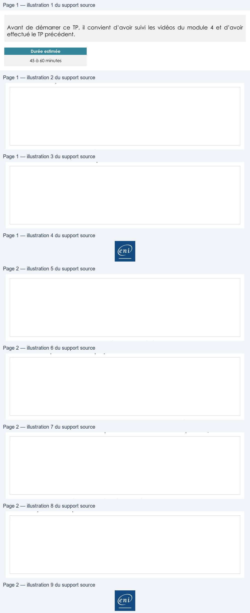

Transcription du document du Drive TSSR. La mise en forme est adaptée au Web ; les compléments IA du portail sont présentés séparément.
Page 1
Utilisation d'une distribution GNU/Linux
Fichiers et dossiers
TP du Module 04 – Fichiers et dossiers sous Linux
Avant de démarrer ce TP, il convient d’avoir suivi les vidéos du module 4 et d’avoir
effectué le TP précédent.
Durée estimée
45 à 60 minutes
Énoncé
Dans le module que vous venez de parcourir, vous trouverez les commandes nécessaires
pour répondre aux questions.

Où êtes-vous positionné dans l'arborescence ?
Existe-t-il des fichiers et des répertoires ?
Page 1/2
© ENI – Tous droits réservés
Page 2
Utilisation d'une distribution GNU/Linux
Créez un fichier vide appelé MonPremierFichier.
Affichez les permissions et le propriétaire attribués à ce fichier.
Affichez les fichiers se terminant par l'extension .conf dans le répertoire /etc.
Affichez les caractéristiques détaillées du répertoire /tmp (pas son contenu). Que
remarquez-vous de particulier ?
Solution
Une solution est proposée pour ce TP sous la forme d'un PDF commenté, disponible dans
les ressources à télécharger.
Page 2/2
© ENI – Tous droits réservés

Illustrations du support Drive — pages 1 à 2. Les images sont regroupées sans redimensionnement ; aucun contenu généré par IA.